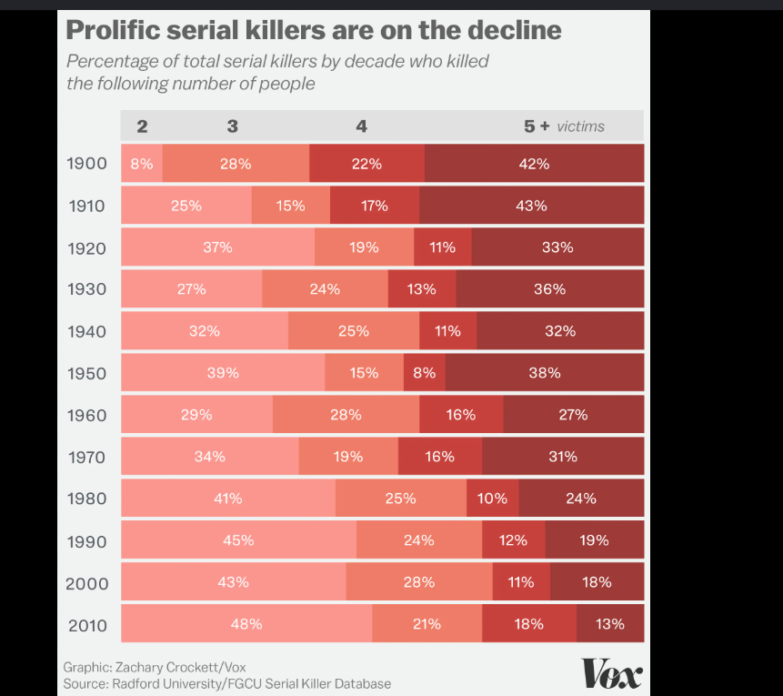

Perception in data visualisation
About this exercise
[Summarise the objective of this exercise here, in your own words — a sentence or two on what it asked you to do and why.]
Chosen visualisation

1. Preattentive processing
The first thing that captures attention is the dark red area on the far-right side (the "5+ victims" group).
The reason for such eye-catching is that it is based on retentive processing, the automatic processing of visual information, which happens in less than a few milliseconds before it can be processed cognitively. In this case, it is activated by the retentive visual cue of colour hue and colour value/shades contrast. Since our visual system tends to focus on differentiations in colour intensity automatically, the dark red colour immediately stands out from other colours around it, especially from the light-peach colours.
2. Gestalt law
The chart strongly relies on the Gestalt principle of similarity, as it uses a consistent four-color palette across every decade row. This colour uniformity allows the viewer to instantly group identical categories vertically. Such as tracking the dark red "5+ victims" segments down the chart without needing to re-read the column labels. Consequently, similarity enables quick pattern recognition and visual comparison of trends over time.
3. Visual accuracy
The quantitative variable visualised is the percentage of serial killers per decade, which is encoded using the length of horizontal segments within a stacked bar chart. According to Cleveland and McGill's hierarchy of perceptual tasks, while position on a common scale offers the highest level of visual accuracy (which only applies to the leftmost "2 victims" category), length without a common baseline ranks lower in perceptual precision. Because the middle and rightmost segments lack an aligned baseline, viewers cannot easily judge relative proportions or small changes across decades through visual comparison alone, forcing a reliance on the printed numerical percentages.
Reference
Crockett, Z. (2016, December 3). What data on 5,000 murderers and 10,000 victims tells us about serial killers. Vox. https://www.vox.com/2016/12/2/13803158/serial-killers-victims-data